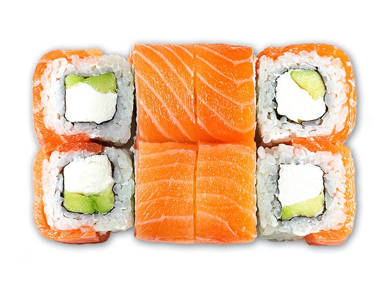
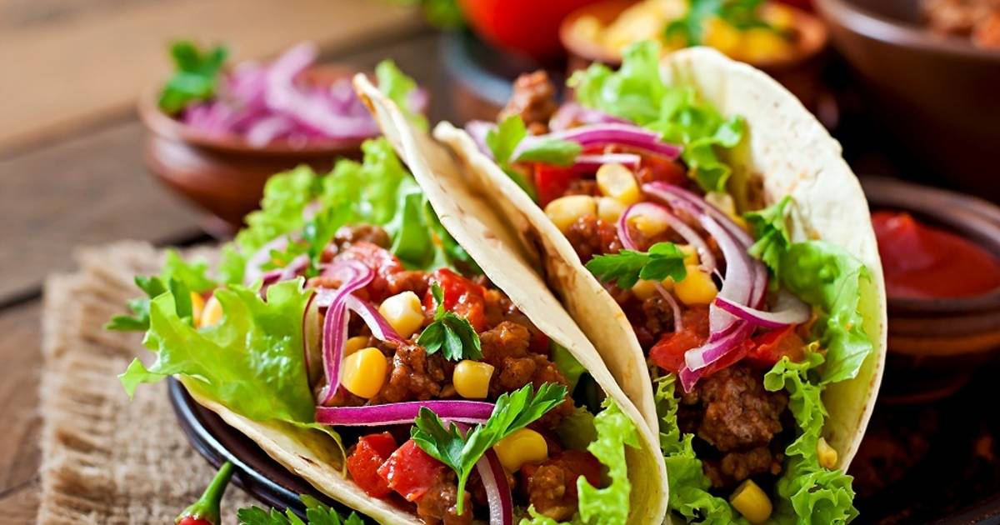
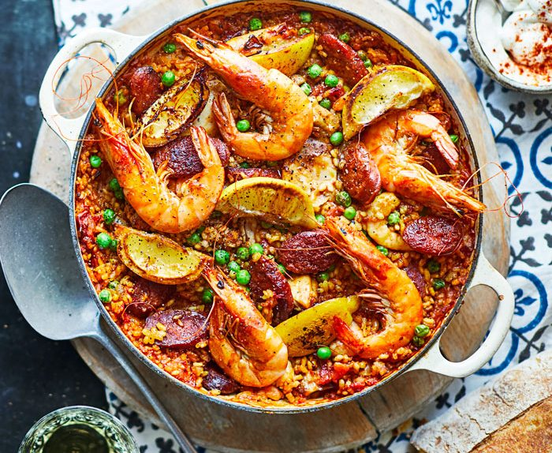
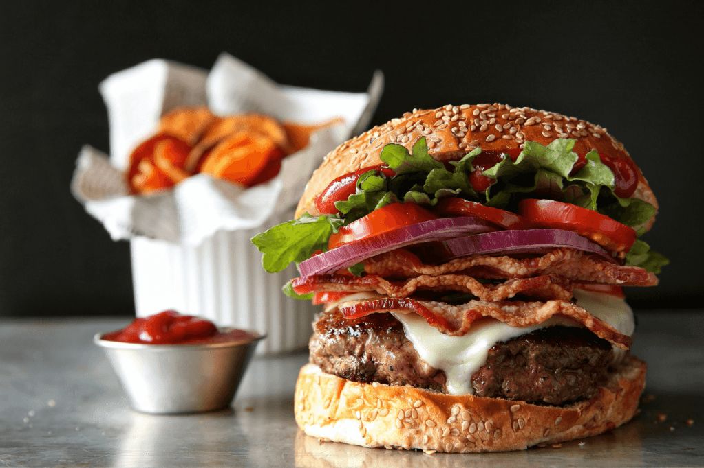
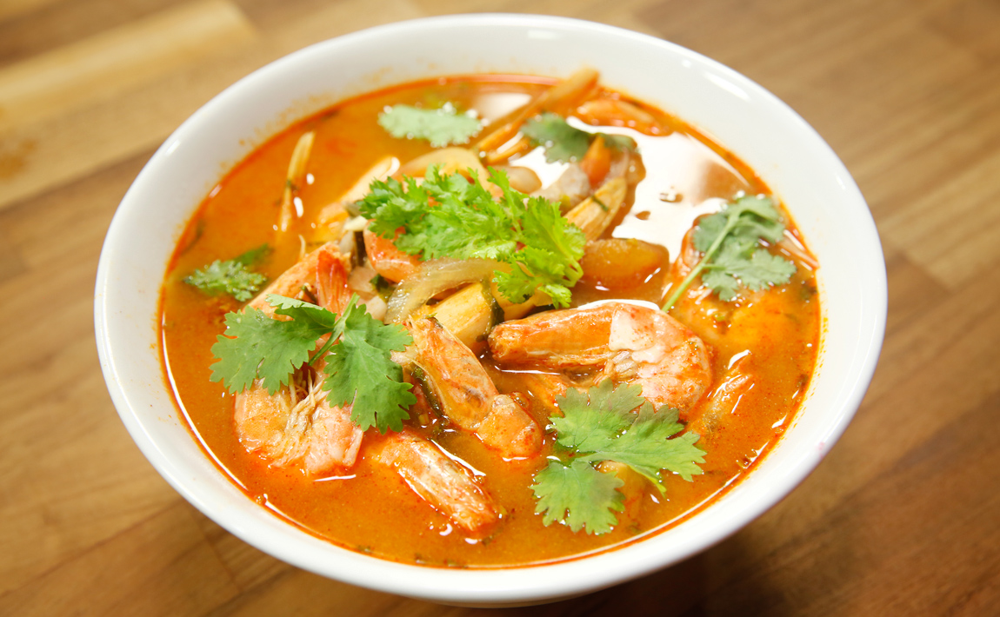
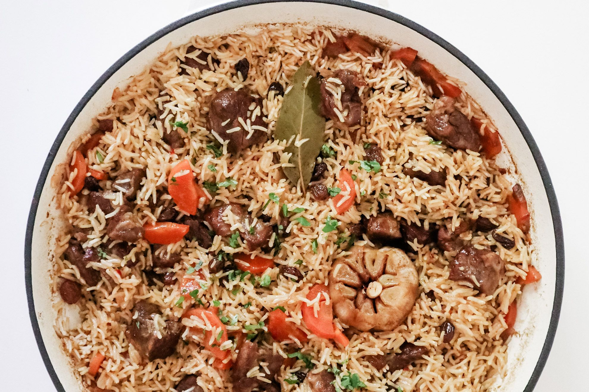

Топ 10 страв світу
-
1. Піцца Маргарита (Італія)
Традиційна італійська піца з томатним соусом, моцарелою та свіжим базиліком.

-
2. Суші (Японія)
Різні види суші, такі як нігірі, маки та сашимі, які зазвичай включають рис і сирі морепродукти.
 -
3. Такос (Мексика)
Тортилья, наповнена м'ясом, сиром, овочами та соусами, наприклад, гуакамоле або сальсою.
 -
4. Паелья (Іспанія)
Іспанська страва з рису, приготована з морепродуктами, куркою, овочами та спеціями, включаючи шафран.
 -
5. Гамбургер (США)
Класичний американський бутерброд з котлетою з яловичини, сиром, салатом, помідорами та іншими добавками.
 -
6. Том Ям Кунг (Таїланд)
Гострий і кислий тайський суп з креветками, лимонною травою, кафір-лаймом, чилі та кокосовим молоком.
 -
7. Біф Бурґіньйон (Франція)
Тушкована яловичина в червоному вині з цибулею, морквою, грибами та спеціями.

-
8. Плов (Середня Азія)
Рисова страва з м'ясом (часто бараниною або куркою), морквою, цибулею та спеціями.
 -
9. Кебаб (Туреччина)
Шматочки м'яса, мариновані та приготовані на грилі, часто подаються з овочами та соусами.

-
10. Рататуй (Франція)
Овочева страва з баклажанів, кабачків, перцю, помідорів, цибулі та часнику, запечена у власному соку.